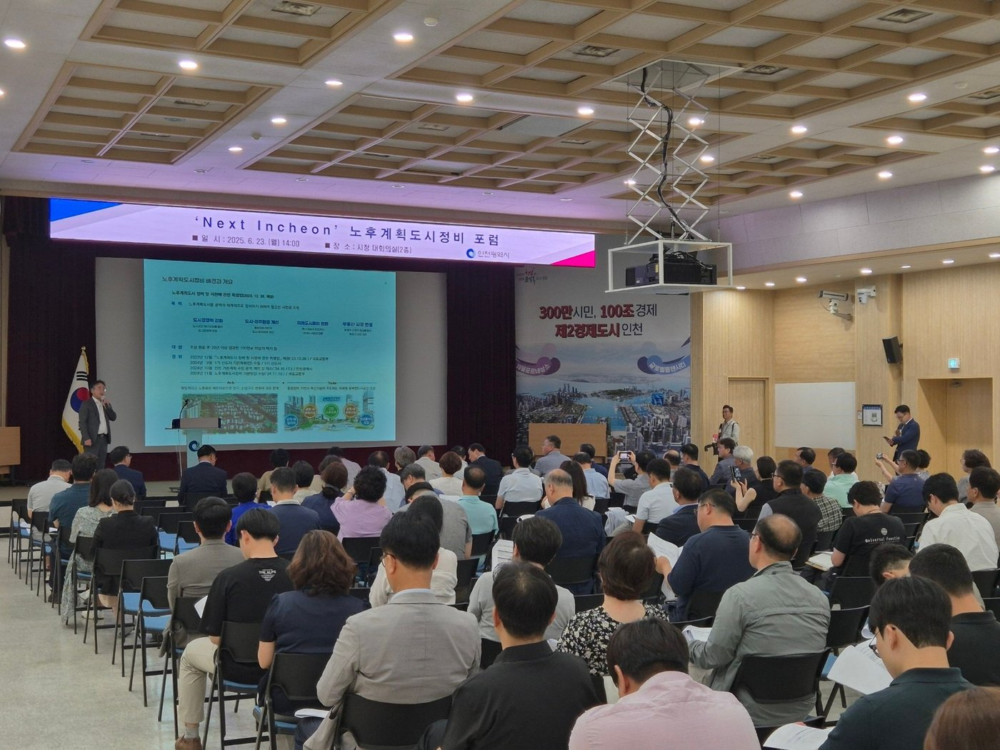
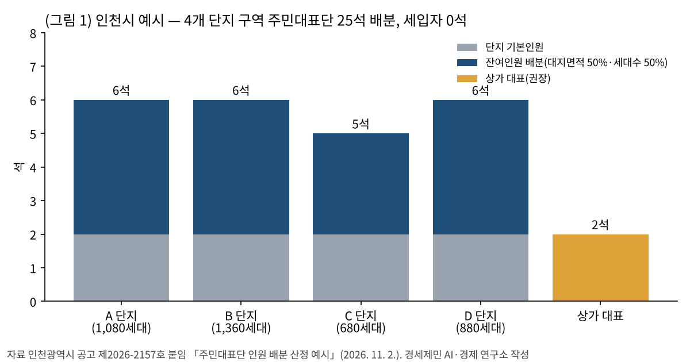
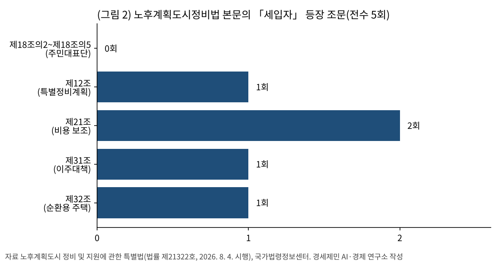
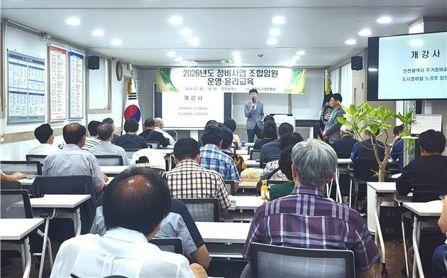
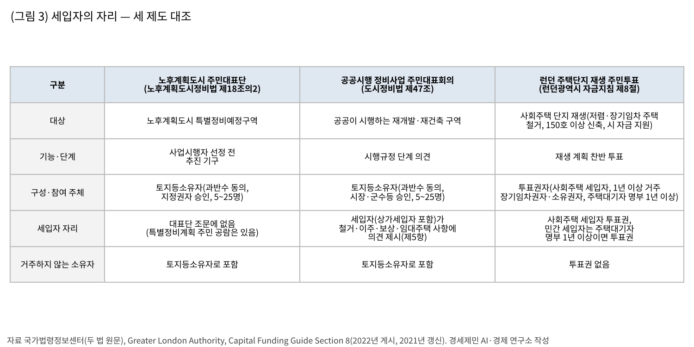
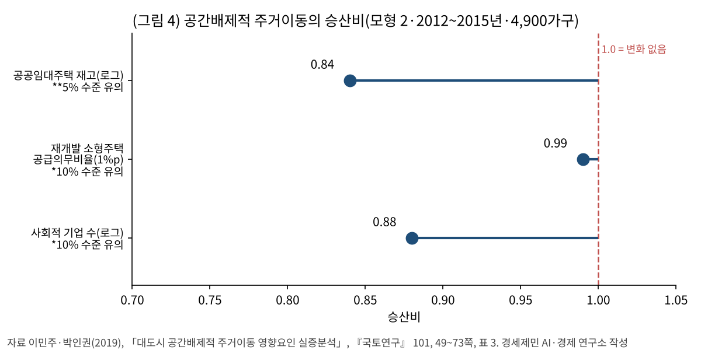
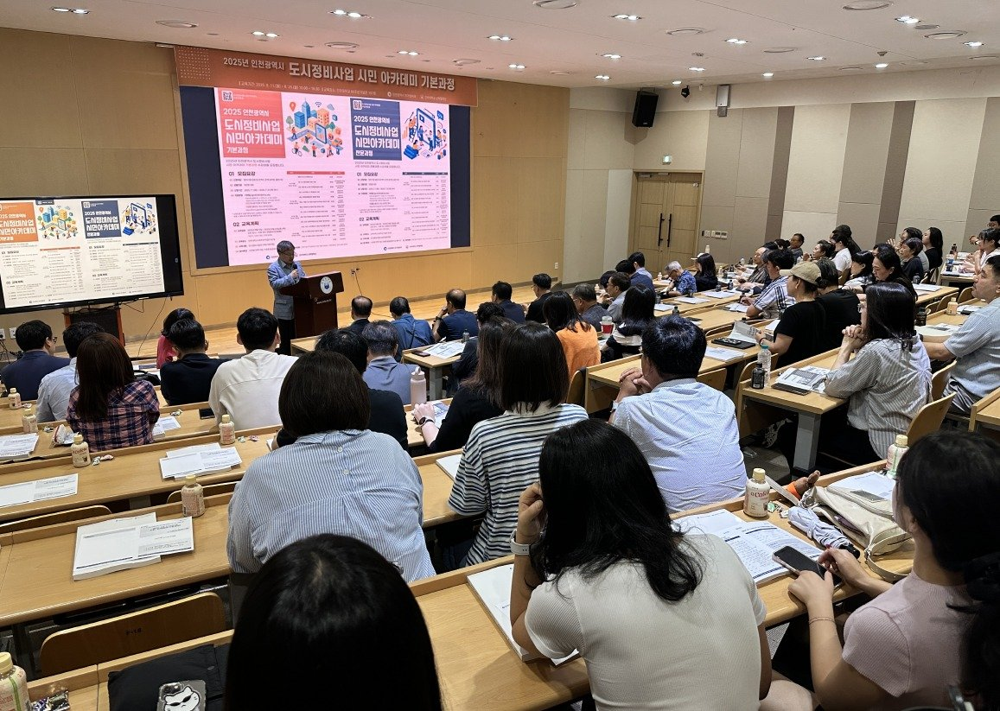

[부동산 브리핑] 노후계획도시 주민대표단 최대 25석과 세입자의 자리
토지등소유자로 꾸리는 대표단
법 본문 「세입자」 5회, 대표단 조문 0회
도시정비법·런던 제도와의 대조
AI경제저널=김갑봉 기자 | 인천광역시(인천시) 노후계획도시 선도지구 6개 구역 25개 단지, 1만 6267호가 사업의 첫 고비를 넘고 있다. 구역마다 주민대표단을 꾸리는 일이다. 대표단은 사업시행자를 고르고 개략적인 특별정비계획을 짠다.
「노후계획도시 정비 및 지원에 관한 특별법」(노후계획도시정비법) 본문 전체에서 「세입자」라는 낱말은 다섯 번 나온다(경세제민 AI·경제 연구소 셈). 이 브리핑은 그 다섯 자리를 「도시 및 주거환경정비법」(도시정비법)의 주민대표회의, 런던의 주민투표 제도와 견준다.

25석의 주인, 토지등소유자
인천시는 2026년 11월 2일 「노후계획도시특별정비예정구역 주민대표단 구성기준」을 공고했다(공고 제2026-2157호). 대표단은 대표 1명과 감사를 포함해 5명 이상 25명 이하로 꾸린다. 토지등소유자 과반수의 동의를 받고 지정권자인 인천시의 승인을 받아야 한다.
자리는 단지 수에 따라 먼저 나눈다. 2개 단지 구역은 단지별 3명, 3~4개 단지는 2명, 5개 이상은 1명이다. 남은 자리는 대지면적 비율과 세대수 비율을 반씩 반영해 배분한다. 구성기준의 상세는 연구소 월간보고서 2026년 10월호 「내 동네가 바뀐다」를 참고한다.
공고문은 구성 대상을 「특별정비예정구역 내 토지등소유자」로 적었다. 구성원은 재임 중 토지등소유자 자격을 유지해야 한다. 시는 상가 대표 2명 이상을 두라고 권장했는데, 공고문은 그 목적을 「상가 소유자의 대표성 확보」로, 보도자료는 「상가 소유자의 의견 반영」으로 적었다.
시가 붙임으로 낸 예시를 그대로 따라가면 4개 단지 4000세대 구역의 25석은 단지 몫 23석과 상가 대표 2석으로 모두 찬다(그림 1). 세입자에게 돌아가는 자리는 0석이다.

법 본문 속 「세입자」 다섯 자리
주민대표단의 법적 근거는 노후계획도시정비법 제18조의2다. 법률 제21322호(2026년 2월 3일 공포, 8월 4일 시행)가 이 조문을 새로 넣었다. 조문은 「토지등소유자는 … 특별정비예정구역별로 주민대표단을 구성할 수 있다」로 시작한다. 제18조의2부터 제18조의5까지 대표단을 다룬 네 조문에 세입자는 나오지 않는다.
이 법 본문에서 「세입자」는 모두 다섯 번 나온다(그림 2. 연구소 셈, 법률 제21322호 본문 기준, 부칙 제외, 「상가 세입자」 포함).
- 제12조 제14호는 특별정비계획에 「세입자와 소규모 주택 또는 토지의 소유자의 주거대책」을 담게 했다.
- 제21조는 세입자에게 주는 공공주택 임차료·관리비·주거이전 비용과 상가 세입자의 임시상가 비용을 국가나 지방자치단체가 보조하거나 융자할 수 있게 했다(2회).
- 제31조 제1항은 토지등소유자와 세입자를 함께 「이주민」으로 묶고, 이주대책을 세울 의무를 시·도지사와 사업시행자에게 지웠다.
- 제32조는 순환용 주택을 철거되는 주택의 소유자 또는 세입자가 임시로 사는 주택으로 정의했다.
「임차인」이라는 낱말은 이 법 본문에 없다. 세입자도 의견을 낼 수 있는 길로는 제12조 제2항의 주민 공람이 있다. 지정권자는 특별정비계획을 세울 때 그 내용을 주민에게 공람하고 지방의회의 의견을 들어야 한다.
이 셈은 법률 본문만 대상으로 했고 시행령은 따로 보지 않았다. 연구소는 이 셈을 이렇게 읽는다. 법은 세입자를 이주대책과 그 지원의 대상으로 적었고, 사업시행자를 고르는 대표단 조문에는 적지 않았다.

소유자 쪽의 근거
2026년 2월 개정 이유는 「주민대표단의 법적 근거를 마련」해 「주택공급 촉진 및 미래도시 전환을 신속히 추진」하려는 데 있다. 개정 이유는 대표단을 소유자로 꾸리는 까닭을 따로 적지 않았다.
대표단의 업무는 사업 주체를 정하는 일이다. 제18조의3은 사업시행자와 총괄사업관리자 선정, 개략적인 특별정비계획 작성, 조합 구성 준비, 특별정비구역 지정 제안을 대표단의 업무로 적었다. 공고문이 정한 대로 대표단 구성 동의서에 지장을 찍는 사람도 토지등소유자다.
인천시는 이번 기준의 목적을 「주택단지별 공정한 대표성 확보」와 「주민 간 불필요한 갈등」 줄이기로 들었다. 앞서 시가 2026년 8월 25일 발표한 선도지구 구역별 동의율은 만수 A4구역 63.5%가 가장 낮고, 갈산·부평·부개 A3구역 87.8%가 가장 높았다. 시는 연수·선학 두 구역의 동의율을 평균 90.3%로만 밝혔다. 시는 9월과 10월 두 차례 주민간담회를 열었고, 9월 17일부터 30일까지 의견을 받았다.

같은 나라 다른 법, 바다 건너 다른 도시
국내에도 비슷한 주민 대표 기구가 있다. 공공이 재개발·재건축을 시행할 때 꾸리는 도시정비법 제47조의 주민대표회의다. 인원(5~25명)과 토지등소유자 과반수 동의 요건은 노후계획도시 주민대표단과 같다. 다만 주민대표회의는 공공 시행을 원할 때 꾸려야 하는 기구이고(제47조 제1항), 승인권자는 시장·군수등이다.
다른 점은 제47조 제5항이다. 이 조항은 「주민대표회의 또는 세입자(상가세입자를 포함한다)」가 사업시행자의 시행규정에 의견을 낼 수 있게 했다. 대상은 건축물 철거, 주민 이주(세입자 퇴거 포함), 보상(세입자 주거이전비 포함), 정비사업비 부담, 세입자 임대주택 공급과 입주자격이다. 사업시행자는 그 의견을 반영하려 노력해야 한다.
다만 이 조항은 사업시행자가 정해진 뒤 시행규정을 만드는 단계에 걸린다. 노후계획도시 대표단은 그보다 앞서 사업시행자를 고르는 단계의 기구다. 제18조의3은 공공기관이나 지방공사가 예비사업시행자로 지정되면 대표단이 이 주민대표회의를 꾸릴 수 있다고 정했다. 이 경로로 꾸린 기구는 도시정비법 제47조에 따른 주민대표회의여서, 제5항의 세입자 의견 조항도 함께 걸린다고 연구소는 읽는다. 민간이 시행하는 구역에는 이 경로가 없다.
런던은 다른 방식을 택했다. 런던광역시는 2018년 7월 18일부터 주택단지 재생에 시 자금을 대는 조건으로 주민투표를 걸었다(자금지침(Capital Funding Guide) 제8절). 대상은 기존 사회주택 단지에서 저렴주택(affordable homes)이나 장기임차 주택을 헐고 150호 이상을 새로 짓는 사업이고, 일부 면제가 있다.
- 투표권은 사회주택 세입자, 1년 이상 실제로 사는 장기임차권자·소유권자(리스홀더·프리홀더), 주택대기자 명부에 1년 이상 오른 거주자에게 준다. 자격을 갖춘 16세 이상은 한 사람이 한 표다.
- 그 단지에 살지 않는 장기임차권자·소유권자는 투표하지 못한다. 민간 임대 세입자는 주택대기자 명부에 1년 이상 올라 있으면 투표한다.
- 투표한 사람의 과반이 찬성하면 통과하고, 투표율 하한은 없다.
두 제도는 기능이 다르다. 런던의 투표는 단지를 소유한 지방정부·주택협회의 재생 계획을 받아들일지 묻는 찬반 절차이고, 인천의 대표단은 사업을 끌고 가는 추진 기구다. 대상도 지방정부와 주택협회의 사회주택 단지여서 인천 노후계획도시와 그대로 견줄 수는 없다. 그래도 런던은 소유만이 아니라 실제 거주를 따져, 살지 않는 소유자를 빼고 사회주택 세입자를 넣었다(그림 3).

연구가 짚은 자리
대도시 임차가구가 원하지 않은 이사로 더 나쁜 곳에 밀려나는 요인을 분석한 실증 연구가 있다. 이민주·박인권(2019)은 국토교통부 주거실태조사를 묶은 자료로 이 이동을 다층 순서형 로짓모형으로 분석했다. 이 연구는 대표성이 아니라 저렴주택 공급과 밀려나는 이동을 다룬다. 이 절은 세입자 주거대책의 내용에 관한 근거로만 쓴다.
이 연구는 비자발적 이주 가운데 이주 뒤 주택과 주거환경이 나빠지는 이동을 「공간배제적 주거이동」으로 정의했다. 2012~2015년 모형(4900가구)의 결과는 이렇다(그림 4).
- 공공임대주택 재고(로그)의 승산비는 0.84였다(5% 수준에서 유의). 승산비는 더 나쁜 이동 범주에 들 승산의 배수다. 논문은 로그의 밑을 밝히지 않았고, 연구진은 재고가 2배가 되면 이런 이동의 「확률」이 0.84배로 준다고 적었다.
- 재개발 소형주택 공급의무비율 1%p당 승산비는 0.99였다(10% 수준에서 유의).
- 지역 사회적 기업 수(로그)의 승산비는 0.88이었다(10% 수준에서 유의).
같은 모형에서 재건축 소형주택 공급의무비율과 재개발 임대주택 공급의무비율은 유의하지 않았다. 노후계획도시 정비는 아파트 단지를 다시 짓는 사업이고 연구 자료는 2012~2015년의 것이어서, 이 결과를 그대로 옮기는 데에는 한계가 있다.
연구진은 정비사업 때 원주민 재정착을 위한 저렴주택 공급을 늘리자고 제안했다. 노후계획도시정비법 제31조는 이주대책을 세울 의무를 정했고, 재정착용 저렴주택의 비율은 이 조문에 없다.

노후계획도시정비법은 세입자를 이주민으로 적고 이주대책의 대상으로 삼았지만, 사업시행자를 고르는 대표단 조문에는 적지 않았다(그림 2). 도시정비법은 시행규정 단계에서 세입자 의견 조항을 두었고, 런던은 재생 계획 찬반 투표에서 살지 않는 소유자를 빼고 사회주택 세입자에게도 표를 주었다(그림 3). 인천 선도지구 주민들은 지금 대표단을 꾸리고 있고, 세입자 주거대책은 그 대표단이 개략안을 짜는 특별정비계획에 들어가 주민 공람을 거친다.
선도지구 6개 구역의 임차가구 수는 공개 통계에서 찾지 못했다. 연구소는 도시정비법 제47조 제5항처럼 세입자가 철거·이주·보상 사항에 의견을 낼 길을 구성기준에 적을 수 있다고 본다.

주민대표단 구성기준의 문의처는 인천시 주거정비과(032-440-3445)다.
이해상충 알림 — 경세제민 AI·경제 연구소(주)는 인천시의회 「인천 택지지구 공간 재창조 연구회」의 정책연구용역을 수행하고 있다. 이 글은 그 용역 내용을 쓰지 않고 인천시가 공개한 원문만 썼다.
참고문헌
- 이민주·박인권, 「대도시 공간배제적 주거이동 영향요인 실증분석」, 『국토연구』 제101권, 국토연구원, 2019, 49~73쪽, http://dx.doi.org/10.15793/kspr.2019.101..04
- 경세제민 AI·경제 연구소, 「내 동네가 바뀐다」, 『월간 경세제민 보고서』 2026년 10월호
- 국가법령정보센터, 「노후계획도시 정비 및 지원에 관한 특별법」(법률 제21322호, 2026. 2. 3. 일부개정, 2026. 8. 4. 시행) 본문과 제정·개정이유, https://www.law.go.kr/법령/노후계획도시정비및지원에관한특별법
- 국가법령정보센터, 「도시 및 주거환경정비법」(법률 제21447호, 2026. 3. 5. 타법개정, 2026. 7. 1. 시행) 제47조, https://www.law.go.kr/법령/도시및주거환경정비법/제47조
- 인천광역시, 공고 제2026-2157호 「인천광역시 노후계획도시특별정비예정구역 주민대표단 구성기준 공고」와 붙임 「주민대표단 인원 배분 산정 예시」, 2026년 11월 2일, https://announce.incheon.go.kr/citynet/jsp/sap/SAPGosiBizProcess.do?command=searchDetail&flag=gosiGL&svp=Y&sido=ic&sno=68204&gosiGbn=A
- 인천광역시 주거정비과, 「인천시, 노후계획도시 주민대표단 구성기준 확정」, 2026년 11월 2일, https://www.incheon.go.kr/IC010205/view?repSeq=DOM_0000000015871497
- 인천광역시 주거정비과, 「인천시, 전국 최대 규모 ‘노후계획도시정비 선도지구’최종 6개 구역 확정… 총 1만 6267호 공급 탄력」, 2026년 8월 25일, https://www.incheon.go.kr/IC010205/view?repSeq=DOM_0000000015394292
- 국토교통부 신도시정비기획과, 「인천 노후계획도시정비 선도지구 1만 6267호 선정」, 2026년 8월 26일 조간(8월 25일 등록), https://www.molit.go.kr/USR/NEWS/m_71/dtl.jsp?lcmspage=1&id=95092336
- Greater London Authority, “Section 8. Resident ballots for estate regeneration projects”, Capital Funding Guide, 2022년 10월 25일 게시 파일(본문 최종 갱신 2021년 6월 18일), https://www.london.gov.uk/sites/default/files/2022-11/15%20Section%208.%20Resident%20ballots%20-%2025%20October%202022.pdf
- Greater London Authority, “Estate regeneration”, https://www.london.gov.uk/programmes-strategies/housing-and-land/mayors-priorities-londons-housing-and-land/estate-regeneration
[사진 출처]
- [사진 1] 인천광역시 주거정비과, 「인천시, ‘Next Incheon’ 포럼 개최, 노후계획도시 비전 제시」, 2025년 6월 23일, https://www.incheon.go.kr/IC010205/view?repSeq=DOM_0000000012588829 (공공누리 제1유형 출처표시)
- [사진 2] 인천광역시 주거정비과, 「인천시, 정비사업 조합임원등 운영·윤리교육 첫 실시」, 2026년 7월 2일, https://www.incheon.go.kr/IC010205/view?repSeq=DOM_0000000015068705 (공공누리 제1유형 출처표시)
- [사진 3] 인천광역시 주거정비과, 「인천시,‘2025년 도시정비사업 시민 아카데미 전문과정’ 개강」, 2025년 9월 5일, https://www.incheon.go.kr/IC010205/view?repSeq=DOM_0000000013067389 (공공누리 제1유형 출처표시)
※ 이 기사는 AI 프로그램 클로드를 활용해 작성했습니다.
관련기사
- [부동산 브리핑] 검단의 새집 727호는 비어 있는데 전셋값은 오른다
- 노후계획도시 선도지구, 분담금은 용적률 두 구간에서 갈린다
- [도시계획·부동산] 인천 재개발 14곳 원문을 열었다, 9곳이 에너지 성능으로 용적률을 샀다
- [도시계획·부동산] 인천 아홉 구를 같은 16주로 다시 셌다, 세입자 부담은 영종·계양·연수가 컸다
저작권자 © AI경제저널 무단전재 및 재배포, AI학습 및 활용 금지